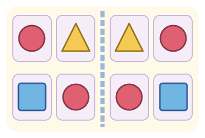

Дзеркальна мозаїка Мімі

Доповни візерунок, як у дзеркалі!
Обери фігуру внизу, а потім клітинку праворуч.
Фігури біля дзеркальної лінії мають бути поруч з обох боків.
2 рівні · 16 візерунків · без таймера
Доповни візерунок, як у дзеркалі
ЗразокТвоя мозаїка
Почни з клітинок біля дзеркальної лінії.
Перший рівень пройдено!
Тепер візерунки стануть більшими.
Порожні клітинки теж мають віддзеркалюватися.
Чудова мозаїка!
Мімі дякує за твою уважність!
Звук не запустився. Натисни «Послухати» або грай за текстовими підказками.